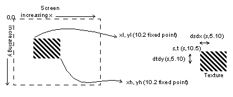
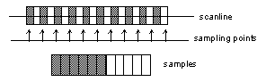
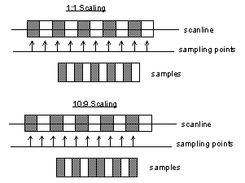
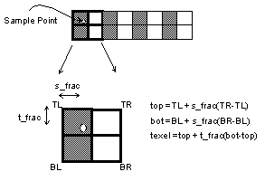
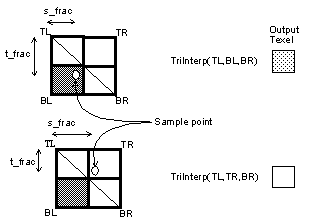
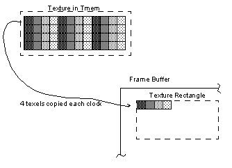

|
|
Texture Rectangles (Hardware Sprites)
Warning: Code fragments in this chapter have not been fully verified. A demo containing these examples will be included in a future software release.
A texture rectangle is a special primitive supported by the Reality Display Processor (RDP) hardware. This primitive is intended to provide simple ‘sprite’ capabilities with a minimum number of parameters. Texture rectangles are screen-aligned rectangles whose coordinates are defined directly in screen space.
Example 14-1 Texture Rectangle Command
gsSPTextureRectangle(xl, yl, xh, yh, tile, s, t, dsdx, dtdy)
Texture coordinates are defined by specifying the start point S and T coordinates at the top left corner of the rectangle and the step in S per pixel in X and the step in T per pixel in Y. Example 14-2 shows a rectangle 100 pixels wide by 100 pixels high drawn at screen coordinates (100,100). The texture coordinates at the top left corner of the rectangle are (0,0). The texture steps 1 texel per pixel in both the S and T directions. This example assumes that a texture has been previously loaded (see Section 13.9, “Texture Loading”).
Example 14-1 Texture Rectangle Example
gsDPSetTexturePersp(G_TP_NONE), gsSPTextureRectangle(100 << 2, 100 << 2, 200 << 2, 200 << 2, G_TX_RENDERTILE, 0, 0, 1 << 10, 1 << 10),
Caution: The perspective divide of the texture coordinates in the RDP must be disabled using the gsDPSetTexturePersp( ) command when rendering texture rectangles.
Texture rectangles are two-dimensional (2D)-- they may be translated in X and Y, but not rotated. Texture rectangles may be z-buffered in a limited way, as described in Section 14.7, “Z-Buffering Texture Rectangles." Even though they are simple and limited to two dimensions, texture rectangles are useful both in 2-D sprite games as well as for 2-D effects in 3-D games. This chapter will explain some of the details associated with the texture rectangle primitive and provide some simple examples for new Nintendo 64 programmers. Some of the information found in this chapter may also be found in other chapters but is repeated here for completeness.
Figure 14.1.1 Texture Rectangle Definition
|  |
Sampling Overview
A texture is an array of values, where each value is a set of numbers (components) describing the attributes of a texture element, or texel. For the Nintendo 64, the numbers representing a texel are fixed-point. The number of components per pixel and the number of bits per component is variable. Section 14-6, “Color Index Frame Buffer," describes the possible formats for texels.
When displaying a texture on the screen of a display, we must perform a mapping from the texture space to the display image space. In the case of texture rectangles, where the geometric operations are limited to scaling and translation, the main problem is how to sample and filter the source texture so that it is faithfully produced on the display. Figure 14.1.2 is one example of aliasing artifacts that can effect image quality. In this example, 10 black bars are separated by 10 white bars with even spacing. The bars cover a width of 11 pixels on the screen. Because we are sampling at a lower frequency than the texture, our output image is aliased.
Aliasing artifacts are caused by high-frequency information that is insufficiently sampled appearing as low-frequency information. Furthermore, if the beginning sample point is moved slightly, the sampled image can shift dramatically. During animations this causes the displayed image to scintillate or flash. Nyquist’s Law indicates that the sampling frequency should be greater than twice the highest frequency component in the texture to avoid aliasing artifacts.
Figure 14.1.2 Aliasing in a Sampled Image
|  |
Point Sampling
Point sampling in the Nintendo 64 means that we assume that each texel maps to one pixel on the display, and we ignore any fractional overlap between texels and pixels. Example 14-3 shows how to enable point sampling.
Example 14-3 Enable Point Sampling
gsDPSetTextureFilter(G_TF_POINT)
Point sampling works well for mapping a rectangular texture to a screen-aligned rectangle of the same size on the display. Problems occur if the sampling ratio is not 1:1, however, as shown in Figure 14.1.3. In the first case, we display 10 texels using 10 pixels. In the second case, we scale the image slightly by displaying 9 texels on 10 pixels. This results in the middle pixel having the same color as the previous bar. In general, point sampled images should be scaled by an integer power of two to avoid this problem. To achieve other scalings, it is necessary to use bilinear filtering.
Figure 14.1.3 Point Sampling Scaling Problem
|  |
Example 14-4 demonstrates 3 texture rectangles with the texture scaled by 1, 2, and 4 respectively:
Example 14-4 Scaled, Point Sampled Textures
gsDPSetTextureFilter(G_TF_POINT), gsSPTextureRectangle(50 << 2, 50 << 2, 150 << 2, 150 << 2, G_TX_RENDERTILE, 0, 0, 1 << 10, 1 << 10), gsSPTextureRectangle(60 << 2, 60 << 2, 160 << 2, 160 << 2, G_TX_RENDERTILE, 0, 0, 1 << 9, 1 << 9), gsSPTextureRectangle(70 << 2, 70 << 2, 170 << 2, 170 << 2, G_TX_RENDERTILE, 0, 0, 1 << 8, 1 << 8),
Point sampling also implies that animated sprites will have to move in one-pixel increments. Even though the rectangle can be positioned with 2 bits of subpixel precision, and the texture can be offset to 5 bits of fractional precision, the point sampling only looks at the integer coordinate and so will not change until there is at least a one pixel change in position. Bilinear filtering allows for smoother motion of sprites.
Bilinear Filtering
Instead of selecting a single texel for a given pixel, as in point sampling, bilinear filtering selects four texels surrounding the sample point and interpolates these points using fractional position information to determine the pixel color. Example 14-5 shows how to enable texture filtering.
Example 14-5 Enable Bilinear Filtering
gsDPSetTextureFilter(G_TF_BILERP)
An example of bilinear filtering is shown in Figure 14.1.4.
Figure 14.1.4 Bilinear Filtering
|  |
In the Nintendo 64, rather than doing a full bilinear interpolation using all four samples, a triangular interpolation is performed that uses only three points. The texture filter selects which three points to use depending on where the sample point lies inside the 2x2 grid of texels. In certain cases, the triangular filter can cause small anomalies. These cases occur when there are drastic intensity changes from one texel to another in the texture as shown in Figure 14.1.5. In this example, if the sampling point moves slightly from one side of the diagonal to the other, the resulting color changes abruptly. In general, it is best to prefilter an image so that these sharp texture edges at least a slight intensity ramp.
Figure 14.1.5 Triangular Filtering
|  |
With bilinear filtering, it is possible to scale a texture without the problems of point sampling. Example 14-6 shows a texture rectangle with the texture scaled by 1.5 in S and T:
Example 14-6 Scaled, Bilerped Textures
gsDPSetTextureFilter(G_TF_BILERP), gsSPTextureRectangle(50 < < 2, 50 < < 2, 150 < < 2, 150 < < 2, G_TX_RENDERTILE, 0, 0, 3 < < 9, 3 < < 9),
Smooth scrolling of texture rectangles is discussed in Section 14.2.4, “Smooth Scrolling.”
Average mode for 1:1 Ratio Sampling
There is a special case in which the texture filter can perform an exact average using all four texels. This case occurs when the sample point lies exactly in the center, i.e. s_frac = t_frac = 0.5. To enable the average mode use the command:
Example 14-7 Enable Average Filtering
gsDPSetTextureFilter(G_TF_AVERAGE)
In order to force the sample point to be in the middle of the texel, set the start point to 0.5 and then step by 1 texel per pixel. Example 14-8 demonstrates this:
Example 14-8 Averaging Textures
gsDPSetTextureFilter(G_TF_AVERAGE), gsSPTextureRectangle(50 < < 2, 50 < < 2, 150 < < 2, 150 < < 2, G_TX_RENDERTILE, 1 << 4, 1 << 4, 1 << 10, 1 << 10),
Copy
Copy mode is a special pipeline mode that allows fast image copies to the framebuffer. Copy mode can be enabled as shown in
Example 14-9 Enable Copy Mode
gsDPSetCycleType(G_CYC_COPY)
In copy mode, four horizontally adjacent texels are copied per clock as shown in Figure 14.1.6.
Figure 14.1.6 Copy Mode
|  |
In copy mode, since four texels are copied each clock, the step in S per clock must be set to four. Example 14-10 shows a texture rectangle using copy mode.
Example 14-10 Copy Mode Texture Rectangle
gsDPSetCycleType(G_CYC_COPY), gsSPTextureRectangle(50 << 2, 50 << 2, 150 << 2, 150 << 2, G_TX_RENDERTILE, 0, 0, 4 << 10, 1 << 10),
Since copy mode bypasses most of the RDP pipeline, the filter settings are not used. However, it is still necessary to disable perspective correction as shown in Example 14-2. Also, copy mode is not valid for all texture types. Please see Section 13.11.3, “Copy.”
It is possible to scale textures in copy mode in the T(Y) direction only. Note that in this case, the rules for point sampled scaling apply, only integer power of two scalings.
In copy mode, textures are copied directly to memory, so there is no opportunity for color combiner operations, filtering, transparency, etc. Copying is a write-only operation so transparency using the normal blending hardware is impossible. However, you can achieve ‘cutout’ and ‘dithered’ types of transparency using the alpha compare logic. Please see Section 15.5.4, “Alpha Compare Calculation.”
|
Copyright © 1999 Nintendo of America Inc. All Rights Reserved Nintendo and N64 are registered trademarks of Nintendo Last Updated January, 1999 |